भूगोल (कक्षा 10) - अध्याय 6
विनिर्माण उद्योग (Manufacturing Industries) - संपूर्ण मास्टर नोट्स
कच्चे माल को मूल्यवान उत्पाद में परिवर्तित कर अधिक मात्रा में वस्तुओं के उत्पादन को विनिर्माण (Manufacturing) कहते हैं। (जैसे—गन्ने से चीनी, लौह-अयस्क से इस्पात, बॉक्साइट से एल्युमिनियम तथा रेशे से कपड़ा बनाना)।
🏆 विनिर्माण को 'आर्थिक विकास की रीढ़' क्यों कहा जाता है? (Importance of Manufacturing):
1. कृषि का आधुनिकीकरण: विनिर्माण उद्योग कृषि को ट्रैक्टर, हार्वेस्टर, ट्यूबवेल पंप, उर्वरक, कीटनाशक व प्लास्टिक पाइप्स प्रदान कर आधुनिक बनाते हैं और कृषि पर लोगों की निर्भरता घटाकर द्वितीयक व तृतीयक क्षेत्रों में रोजगार उपलब्ध कराते हैं।
2. बेरोजगारी व गरीबी उन्मूलन: देश से क्षेत्रीय असमानताओं को दूर करने और औद्योगिक बस्तियों के विकास का प्रमुख साधन है।
3. विदेशी मुद्रा अर्जन: निर्मित वस्तुओं के निर्यात से अंतरराष्ट्रीय व्यापार का विस्तार होता है और प्रचुर विदेशी मुद्रा प्राप्त होती है।
4. राष्ट्रीय संपन्नता: वे देश जो अपने कच्चे माल को विविध तथा उच्च मूल्यवान निर्मित माल में परिवर्तित करते हैं, वे ही समृद्ध और विकसित होते हैं।
🤝 कृषि एवं उद्योग एक-दूसरे के पूरक हैं (Interdependence of Agriculture & Industry):
कृषि और उद्योग अलग नहीं बल्कि परस्पर अन्योन्याश्रित हैं। भारत में कृषि पर आधारित उद्योगों ने कृषि पैदावार बढ़ाने में प्रोत्साहन दिया है। ये उद्योग कच्चे माल के लिए कृषि पर निर्भर हैं तथा अपने उत्पाद (कीटनाशक, उर्वरक, पीवीसी पाइप, विद्युत मोटर) किसानों को बेचते हैं। अतः विनिर्माण ने न केवल कृषि उत्पादन को बढ़ाया है बल्कि उत्पादन प्रक्रिया को भी अत्यंत सक्षम बनाया है।
📊 राष्ट्रीय अर्थव्यवस्था में विनिर्माण का योगदान (GDP & NMCC):
• पिछले दो दशकों में भारत की GDP में विनिर्माण क्षेत्र का हिस्सा 17% पर स्थिर रहा है (कुल 27% उद्योग में से 10% खनन, गैस व विद्युत का है)।
• पूर्वी एशियाई देशों (जैसे दक्षिण कोरिया, ताइवान, चीन) में यह हिस्सा 25% से 35% है।
• अगले दशक में 12% वार्षिक वृद्धि दर हासिल करने के लिए केंद्र सरकार ने राष्ट्रीय विनिर्माण प्रतिस्पर्धा परिषद (NMCC - National Manufacturing Competitiveness Council) की स्थापना की है।
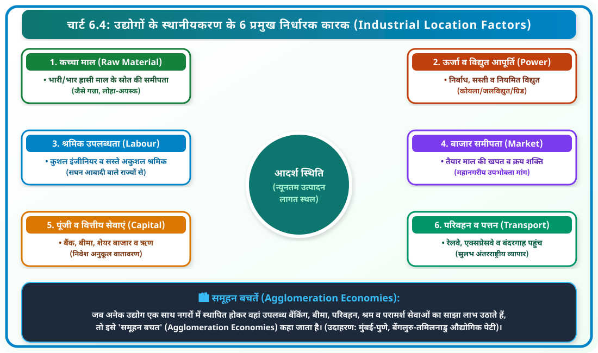
चार्ट 6.4: उद्योगों के स्थानीयकरण के 6 प्रमुख निर्धारक कारक एवं समूहन बचतें (Industrial Location Factors)।
🗺️ औद्योगिक भूगोल:
• न्यूनतम लागत बिंदु: उद्योग वहां स्थापित होते हैं जहाँ कच्चा माल, श्रमिक, पूंजी, ऊर्जा, बाजार व परिवहन न्यूनतम लागत पर उपलब्ध हों।
• समूहन बचतें (Agglomeration Economies): अनेक उद्योग नगरों में उपलब्ध साझा सेवाओं (बैंकिंग, बीमा, परिवहन, श्रम) का लाभ उठाने के लिए एक साथ संकेंद्रित होते हैं।
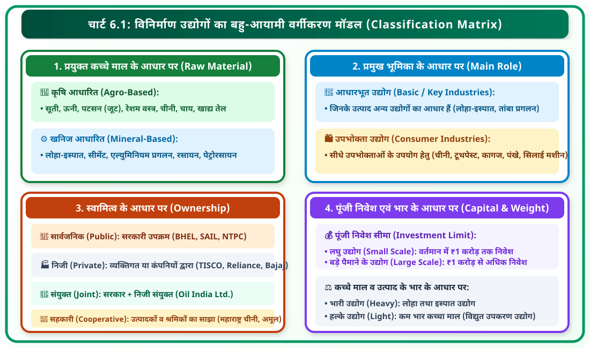
चार्ट 6.1: विनिर्माण उद्योगों का बहु-आयामी वर्गीकरण मैट्रिक्स (Classification Matrix)।
📊 उद्योगों का 5-स्तरीय वर्गीकरण:
• कच्चे माल के आधार पर: कृषि आधारित (सूती, जूट, चीनी) एवं खनिज आधारित (लोहा-इस्पात, सीमेंट, रसायन)।
• प्रमुख भूमिका: आधारभूत (लोहा-इस्पात) एवं उपभोक्ता उद्योग (टूथपेस्ट, पंखे, कागज)।
• पूंजी निवेश: लघु उद्योग (₹1 करोड़ तक) एवं बड़े उद्योग।
• स्वामित्व: सार्वजनिक (SAIL, BHEL), निजी (TISCO), संयुक्त (Oil India) एवं सहकारी (महाराष्ट्र चीनी मिलें, अमूल)।
• भार के आधार पर: भारी उद्योग (लोहा-इस्पात) एवं हल्के उद्योग (इलेक्ट्रॉनिक्स)।
कृषि आधारित उद्योग वे हैं जो अपने कच्चे माल के लिए प्रत्यक्षतः कृषि उपजों (कपास, पटसन, गन्ना, चाय, कॉफी, रबड़) पर निर्भर होते हैं।
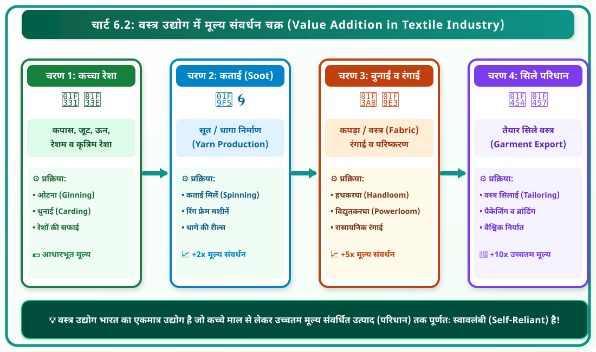
चार्ट 6.2: वस्त्र उद्योग में मूल्य संवर्धन चक्र (Value Addition in Textile Industry)।
🧵 स्वावलंबी उद्योग:
• कच्चा रेशा (Ginning) $
ightarrow$ कताई (Yarn +2x) $
ightarrow$ बुनाई व रंगाई (Fabric +5x) $
ightarrow$ सिले परिधान (Garments +10x)।
• वस्त्र उद्योग भारत का एकमात्र ऐसा उद्योग है जो कच्चे माल से लेकर अंतिम मूल्य संवर्धित परिधान तक पूर्णतः आत्मनिर्भर व परिपूर्ण है।
📜 ऐतिहासिक पृष्ठभूमि: भारत की पहली सफल आधुनिक सूती कपड़ा मिल 1854 में मुंबई में स्थापित की गई थी। प्रारंभ में यह उद्योग महाराष्ट्र और गुजरात की काली मृदा पेटी में संकेंद्रित था।
🗺️ महाराष्ट्र-गुजरात में संकेंद्रण के कारण:
• कपास की प्रचुर उपलब्धता (काली मिट्टी),
• आर्द्र व नम तटीय जलवायु (धागा टूटने से बचता है),
• मुंबई का आधुनिक बंदरगाह (मशीनरी आयात व तैयार वस्त्र निर्यात),
• सस्ते कुशल-अकुशल श्रमिक तथा विशाल बाजार।
🌍 वैश्विक स्थिति व व्यापार: भारत जापान को सूत (Yarn) का बड़ा निर्यातक है। इसके अलावा USA, UK, रूस, फ्रांस, सिंगापुर व अफ्रीकी देशों को भारतीय सूती परिधान निर्यात किए जाते हैं। चीन के बाद भारत में विश्व की दूसरी सबसे बड़ी तकुओं (Spindles) की स्थापित क्षमता है।
⚠️ वर्तमान चुनौतियां: कताई विश्व स्तरीय है, लेकिन बुनाई और परिष्करण क्षेत्र बिखरा हुआ (विद्युतकरघा/हथकरघा) है; पुरानी मशीनरी, बिजली की अनियमित आपूर्ति तथा संश्लेषित कृत्रिम रेशों से कड़ी प्रतिस्पर्धा।
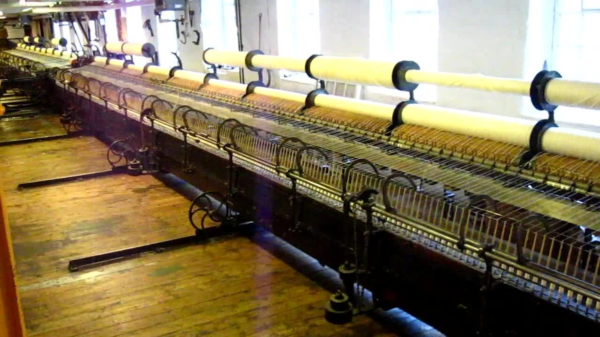
चित्र 6.1: आधुनिक स्वचालित कताई मिल (High-Speed Cotton Ring Spinning Mill)।
🧵 उच्च कोटि का सूत निर्माण:
• भारत की विश्व स्तरीय कताई मिलें जहाँ स्वचालित रिंग स्पिंडल द्वारा उच्च कोटि के सूत की रीलें तैयार की जाती हैं।
चित्र 6.2: पारंपरिक हथकरघा बुनाई (Traditional Handloom Cloth Weaving)।
🧣 विकेंद्रीकृत रोजगार:
• ग्रामीण एवं अर्ध-शहरी इलाकों में लाखों बुनकरों को आजीविका प्रदान करने वाला पारंपरिक हथकरघा क्षेत्र।
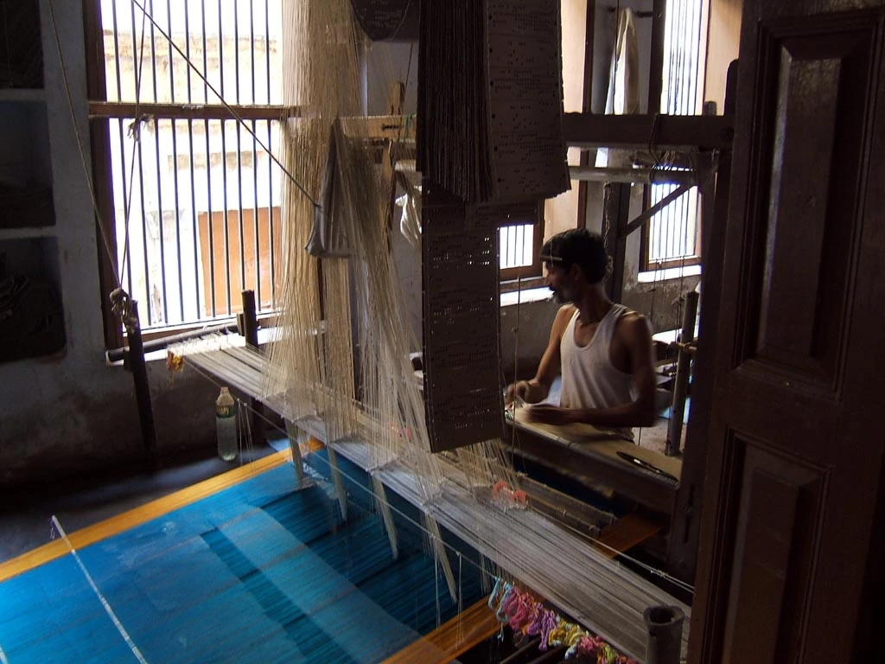
चित्र 6.3: रेशम हथकरघा बुनाई (Traditional Pure Silk Handloom Weaving)।
✨ रेशम वस्त्र निर्माण:
• वाराणसी, कांचीपुरम व मैसूर की विश्वप्रसिद्ध रेशम साड़ियों की पारंपरिक हथकरघा बुनाई।
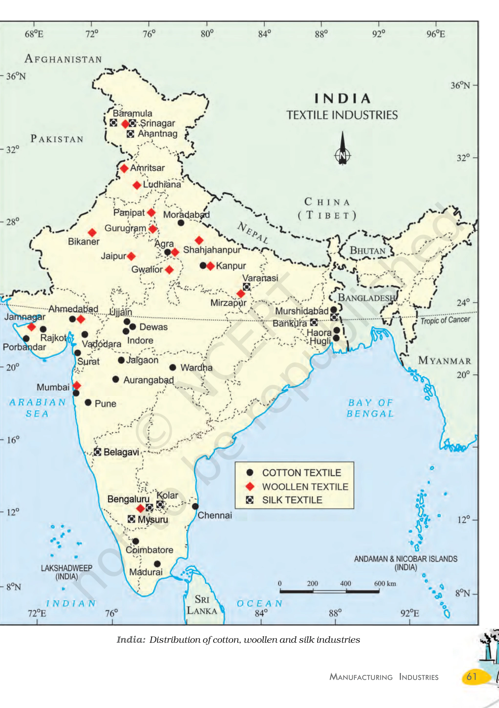
चित्र 6.4: भारत का प्रमुख वस्त्र उद्योग मानचित्र (सूती, ऊनी एवं रेशम उद्योग वितरण)।
🗺️ मानचित्र अध्ययन:
• सूती वस्त्र केंद्र: मुंबई, अहमदाबाद, सूरत, इंदौर, कोयंबटूर, कानपुर, मदुरै।
• ऊनी वस्त्र केंद्र: अमृतसर, लुधियाना, श्रीनगर, मिर्जापुर, जामनगर।
• रेशमी वस्त्र केंद्र: अनंतनाग, बारामूला, मैसूर, बेलगाम, मुर्शिदाबाद, वाराणसी।
🥇 भारत की वैश्विक स्थिति: भारत कच्चे पटसन व जूट सामान का विश्व में सबसे बड़ा उत्पादक है तथा बांग्लादेश के बाद दूसरा सबसे बड़ा निर्यातक है। पहली जूट मिल 1855 में कोलकाता के निकट रिशरा में लगी थी।
🗺️ हुगली नदी तट पर संकेंद्रण के 5 प्रमुख कारण:
1. पश्चिम बंगाल में कच्चे जूट उत्पादक क्षेत्रों की निकटता,
2. जूट के रेशे धोने व प्रगलन (Retting) हेतु हुगली नदी से सस्ता व प्रचुर जल,
3. सस्ता जल परिवहन व रेलवे/सड़क का घना जाल,
4. बिहार, ओडिशा, यूपी से सस्ते श्रमिकों की सुलभता,
5. कोलकाता महानगर का विशाल बैंकिंग, बीमा व निर्यात बंदरगाह।
🌿 पर्यावरण अनुकूल संभावना: सिंथेटिक प्लास्टिक पैकेजिंग के स्थान पर जैव-निम्नीकरणीय (Biodegradable) जूट पैकेजिंग की वैश्विक मांग बढ़ने से भारतीय जूट उद्योग का भविष्य उज्ज्वल हुआ है (राष्ट्रीय पटसन नीति 2005)।
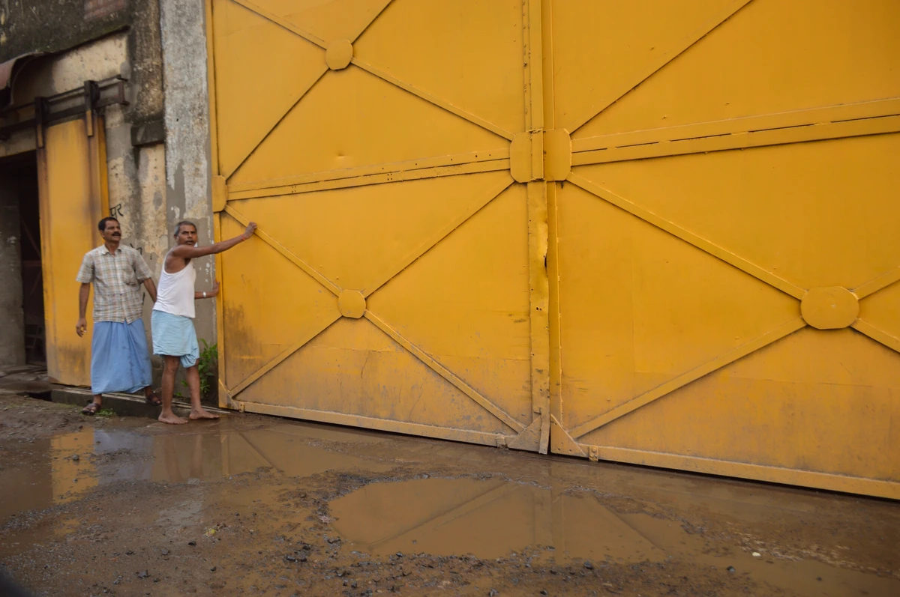
चित्र 6.5: जूट प्रसंस्करण मिल (Golden Jute Processing & Sacking Mill)।
🌾 पर्यावरण-अनुकूल स्वर्ण रेशा:
• हुगली नदी के तट पर कच्चे सुनहरे जूट से मजबूत पैकेजिंग बोरियां, रस्सियां व कालीन तैयार करना।
📊 भारत की स्थिति: भारत विश्व में चीनी उत्पादन में दूसरा तथा गुड़ व खांडसारी उत्पादन में प्रथम स्थान पर है। चीनी उद्योग मौसमी (Seasonal) प्रकृति का है, अतः यह सहकारी क्षेत्र (Cooperative Sector) के लिए सर्वाधिक उपयुक्त है।
🗺️ उत्तर भारत से दक्षिण भारत (महाराष्ट्र) की ओर स्थानांतरण के कारण:
• 1. अधिक सुक्रोज मात्रा: महाराष्ट्र व दक्षिणी गन्ने में सुक्रोज (शर्करा) की मात्रा अधिक होती है।
• 2. लंबा पेराई सत्र: दक्षिण भारत की ठंडी व आर्द्र जलवायु पेराई सत्र को लंबा रखती है।
• 3. सफल सहकारी समितियां: महाराष्ट्र में सहकारी चीनी मिलें प्रबंधन में अत्यंत सफल रही हैं।
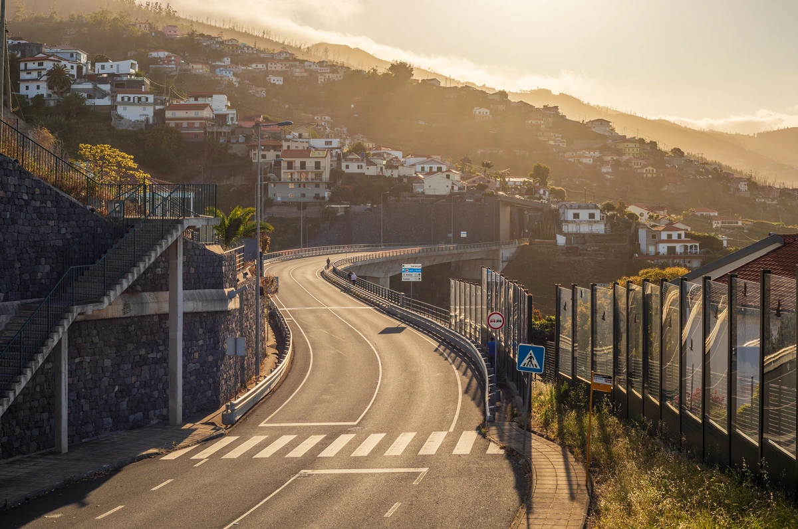
चित्र 6.6: आधुनिक सहकारी चीनी मिल (Cooperative Sugar Mill & Cane Crushing Unit)।
🍬 सहकारी प्रबंधन की सफलता:
• गन्ने की ताजी पेराई कर उच्च सुक्रोज से सफेद चीनी, गुड़ तथा खोई (Bagasse) से सह-विद्युत उत्पादन।
खनिज आधारित उद्योग वे हैं जो प्राथमिक कच्चे माल के रूप में खनिजों और धातुओं का उपयोग करते हैं।
🏗️ आधारभूत उद्योग क्यों?: क्योंकि भारी मशीनरी, रेल पटरियां, पुल, भवन निर्माण, रक्षा सामग्री, मोटर वाहन व सुई तक के निर्माण के लिए सभी उद्योग इस्पात पर निर्भर हैं। किसी देश के इस्पात का उत्पादन और प्रति व्यक्ति उपभोग उसके औद्योगिक विकास का बैरोमीटर माना जाता है।
🗺️ छोटानागपुर पठारी क्षेत्र में संकेंद्रण के कारण:
• उच्च कोटि के लौह अयस्क की निकटतम खदानें (ओडिशा-झारखंड),
• झरिया व बोकारो से उच्च कोटि का कोकिंग कोयला,
• सुंदरगढ़ व पलामू से चूना पत्थर व मैंगनीज,
• बिहार-बंगाल से सस्ते श्रमिक तथा दामोदर घाटी से जलविद्युत।
🏭 मिनी स्टील प्लांट बनाम एकीकृत स्टील प्लांट:
• एकीकृत स्टील प्लांट (Integrated Steel Plants): विशालकाय संयंत्र जहाँ कच्चे माल से लेकर अंतिम उत्पाद (स्टील) तक की सभी प्रक्रियाएं एक ही परिसर में होती हैं (जैसे भिलाई, राउरकेला, बोकारो, जमशेदपुर)। अधिकांश सार्वजनिक क्षेत्र का इस्पात सेल (SAIL - Steel Authority of India Ltd.) द्वारा विपणित किया जाता है।
• मिनी स्टील प्लांट: विद्युत भट्टियों का उपयोग कर स्क्रैप व स्पंज आयरन से री-रोलर्स द्वारा इस्पात बनाते हैं।
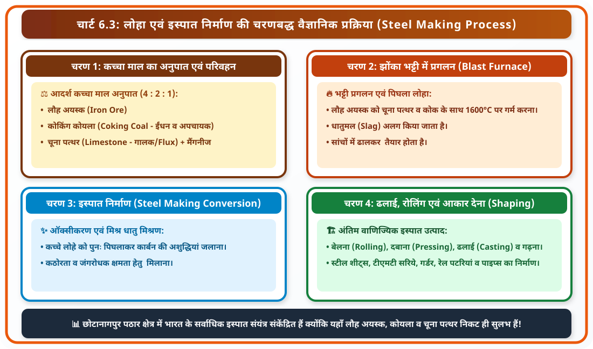
चार्ट 6.3: लोहा एवं इस्पात निर्माण की चरणबद्ध वैज्ञानिक प्रक्रिया (Steel Making Process)।
🔥 4 चरणबद्ध प्रक्रिया:
• कच्चा माल अनुपात (4 लोहा : 2 कोक : 1 चूना पत्थर) $
ightarrow$ ब्लास्ट फर्नेस प्रगलन $
ightarrow$ कच्चा लोहा (Pig Iron) $
ightarrow$ स्टील निर्माण (मैंगनीज मिश्र धातु) $
ightarrow$ रोलिंग व शेपिंग।
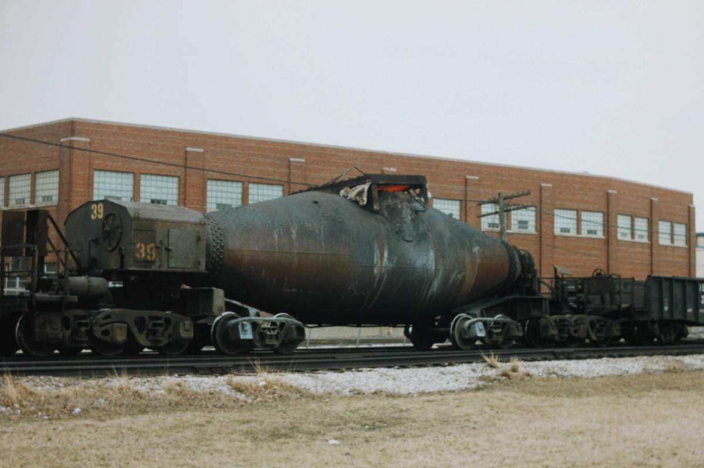
चित्र 6.7: ब्लास्ट फर्नेस में पिघला लोहा (Blast Furnace Molten Pig Iron Stream)।
🔥 भारी उद्योग का हृदय:
• भिलाई व जमशेदपुर की झोंका भट्टी में चूना पत्थर व कोक के साथ पिघलाया गया लौह अयस्क।
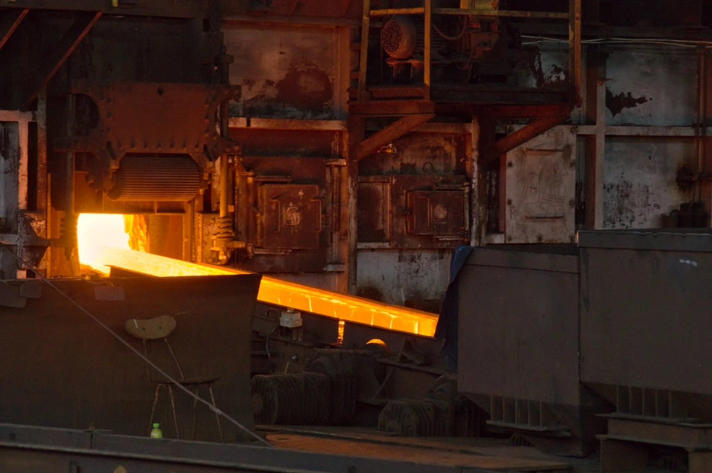
चित्र 6.8: आधुनिक हॉट रोलिंग मिल (Hot Strip Steel Rolling Mill)।
🏗️ वाणिज्यिक इस्पात आकार:
• शक्तिशाली रोलर्स द्वारा लाल तप्त स्टील को वाहनों व पाइपों हेतु मजबूत शीट्स में ढालना।
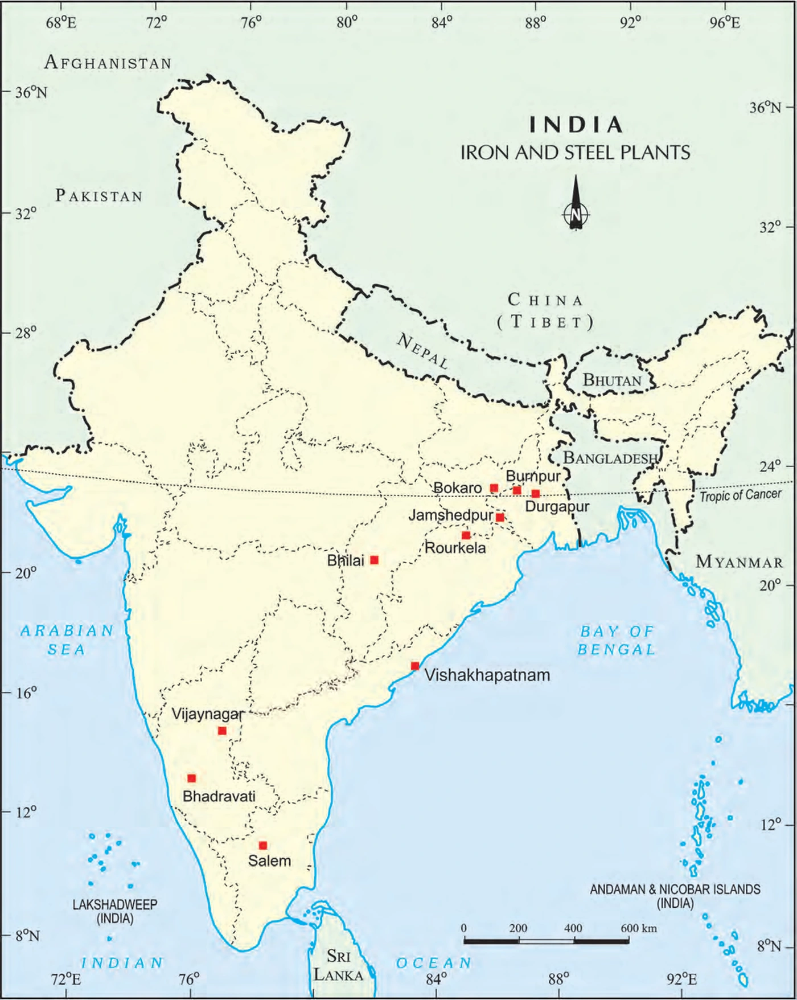
चित्र 6.9: भारत के प्रमुख लोहा एवं इस्पात संयंत्र (Major Iron & Steel Plants of India)।
🗺️ मानचित्र विश्लेषण:
• झारखंड: जमशेदपुर (TISCO), बोकारो | पश्चिम बंगाल: दुर्गापुर, बर्नपुर | ओडिशा: राउरकेला | छत्तीसगढ़: भिलाई | कर्नाटक: विजयनगर, भद्रावती | तमिलनाडु: सेलम | आंध्र प्रदेश: विशाखापट्टनम (तटीय संयंत्र)।
✨ गुणधर्म व उपयोग: यह भारत का दूसरा सर्वाधिक महत्वपूर्ण धातुकर्मीय उद्योग है। एल्युमिनियम हल्का, जंगरोधी, ऊष्मा व विद्युत का सुचालक, आघातवर्ध्य तथा अन्य धातुओं से मिलकर अत्यंत मजबूत होता है। इसका उपयोग हवाई जहाज, बर्तन, विद्युत तार व केबल बनाने में किया जाता है।
⚡ स्थानीयकरण के 2 मुख्य आधार:
1. नियमित व सस्ती विद्युत आपूर्ति (1 टन एल्युमिनियम उत्पादन में लगभग 18,600 kWh बिजली लगती है)।
2. सस्ते दर पर बॉक्साइट की उपलब्धता (4 से 6 टन बॉक्साइट $
ightarrow$ 2 टन एल्युमिना $
ightarrow$ 1 टन एल्युमिनियम)।
🗺️ प्रमुख संयंत्र: ओडिशा (NALCO, HINDALCO), पश्चिम बंगाल, केरल, उत्तर प्रदेश (रेणुकूट), छत्तीसगढ़ (कोरबा), महाराष्ट्र व तमिलनाडु।
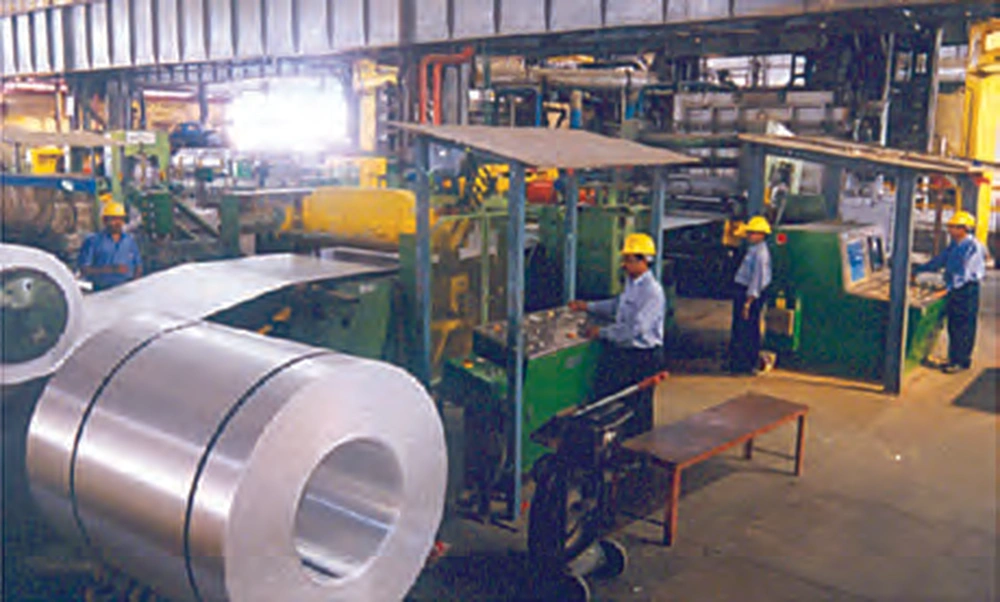
चित्र 6.10: एल्युमिनियम प्रगलन संयंत्र (Aluminium Smelting Facility)।
✈️ वायुयान निर्माण धातु:
• इलेक्ट्रोलाइटिक पॉट्स में बॉक्साइट से एल्युमिना का शोधन कर मजबूत व हल्की धातु का निर्माण।
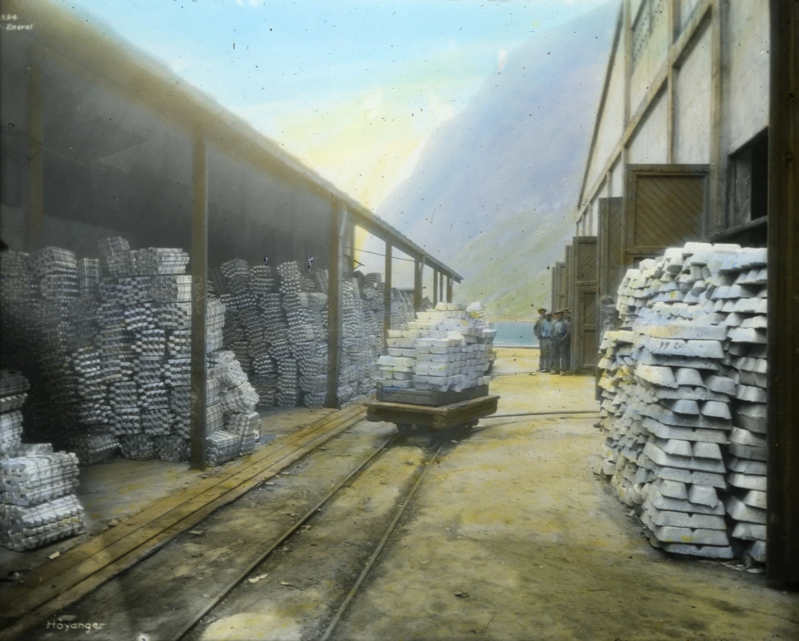
चित्र 6.11: एल्युमिनियम सिल्लियां (Pure Finished Aluminium Ingots)।
⚡ विद्युत तारों व ऑटोमोबाइल का आधार:
• प्रगलन के उपरांत तैयार की गई उच्च शुद्धता वाली चमकदार एल्युमिनियम धातु सिल्लियां।
🧪 रासायनिक उद्योग: भारत में रासायनिक उद्योग तीव्र गति से बढ़ रहा है। यह अपना ही सबसे बड़ा उपभोक्ता है (रासायनिक उत्पाद पुनः अन्य रसायनों को बनाने में प्रयुक्त होते हैं)।
• अकार्बनिक रसायन: सल्फ्यूरिक अम्ल (उर्वरक, पेंट, डिटर्जेंट), नाइट्रिक अम्ल, क्षार व कास्टिक सोडा।
• कार्बनिक रसायन: पेट्रोरसायन (सिंथेटिक रबर, प्लास्टिक, दवाएं, संश्लेषित रेशे)।
🌱 उर्वरक उद्योग (Fertilizers): मुख्य रूप से नाइट्रोजनयुक्त उर्वरक (यूरिया), फॉस्फेटिक उर्वरक (DAP) तथा अमोनियम फॉस्फेट का उत्पादन। भारत में पोटाश (Potash) का कोई भंडार नहीं है, अतः पोटाश का 100% आयात किया जाता है।
• प्रमुख राज्य: गुजरात, तमिलनाडु, उत्तर प्रदेश, पंजाब व केरल मिलकर देश का 50% से अधिक उर्वरक बनाते हैं। प्राकृतिक गैस पाइपलाइन (HVJ) के विस्तार से देश भर में उर्वरक संयंत्र फैले हैं।
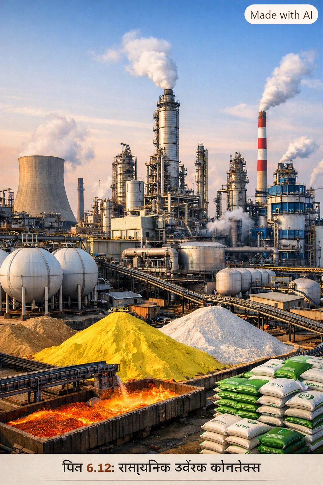
चित्र 6.12: रासायनिक उर्वरक कॉम्प्लेक्स (Chemical Fertilizer Complex)।
🌾 हरित क्रांति का आधार:
• प्राकृतिक गैस व अमोनिया द्वारा उच्च उपज हेतु यूरिया व DAP उर्वरकों का बड़े पैमाने पर उत्पादन।
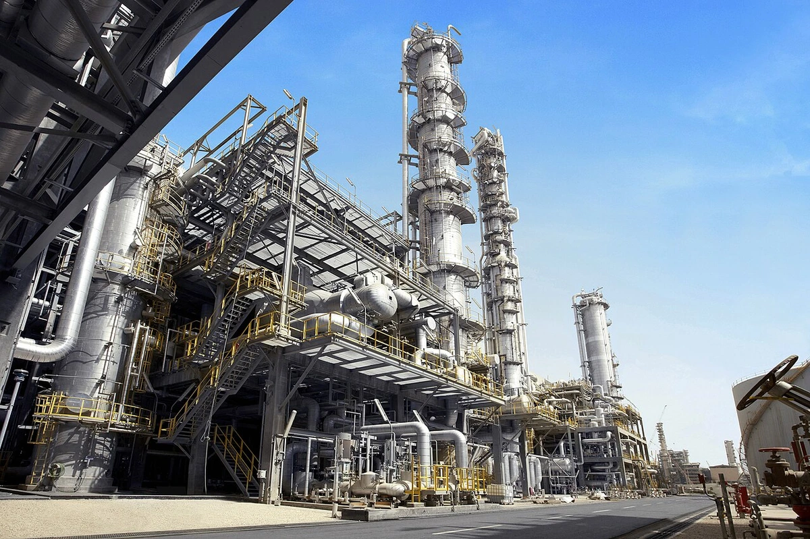
चित्र 6.13: पेट्रोरसायन रिफाइनरी संयंत्र (Petrochemical Refinery Unit)।
🛢️ आधुनिक प्लास्टिक व संश्लेषित वस्त्र आधार:
• कच्चे पेट्रोलियम के प्रभाजी आसवन द्वारा पॉलीमर, कृत्रिम रबर व दवाओं का कच्चा माल तैयार करना।
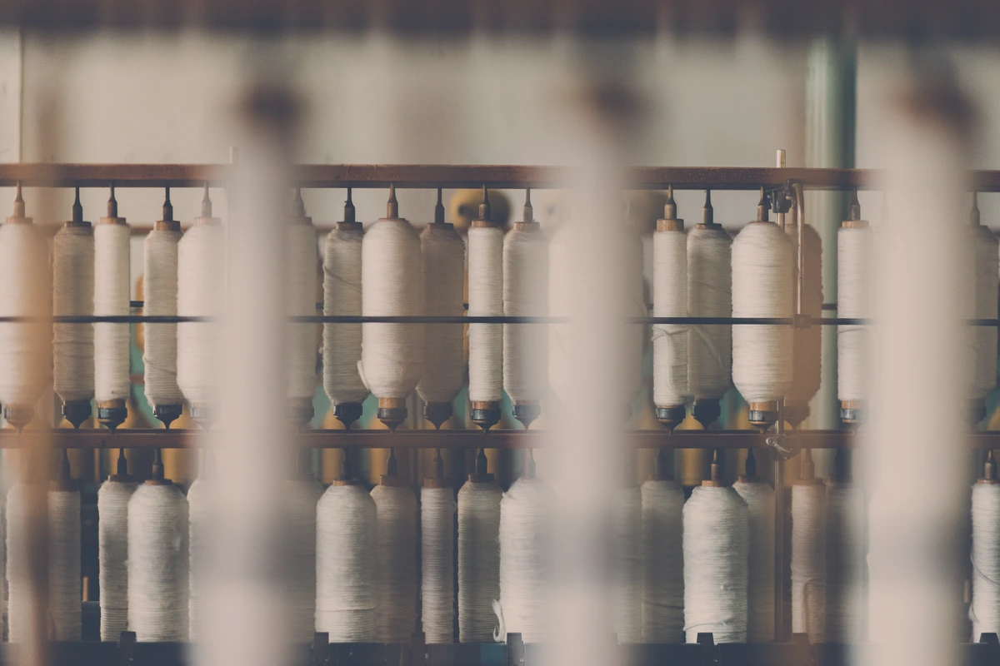
चित्र 6.14: संश्लेषित रेशा विनिर्माण (Synthetic Polyester Polymer Fiber)।
🧵 पेट्रोरसायन आधारित रेशा:
• मजबूत, टिकाऊ व सिकुड़न-मुक्त पॉलिएस्टर व नायलॉन धागों का औद्योगिक विनिर्माण।
🏗️ महत्व व कच्चा माल: भवन निर्माण, कारखाने, पुल, सड़कें, हवाई अड्डे व बांधों के लिए सीमेंट अपरिहार्य है। भारी व स्थूल कच्चे माल—चूना पत्थर (Limestone), सिलिका, एल्युमिना व जिप्सम की आवश्यकता होती है। रेल परिवहन व प्रचुर कोयला/विद्युत अनिवार्य है।
📜 इतिहास व गुजरात में स्थिति: पहला सीमेंट संयंत्र 1904 में चेन्नई में लगाया गया था। गुजरात में कई संयंत्र स्थापित हैं क्योंकि वहाँ से खाड़ी देशों (Gulf Countries) के बाजारों तक सुलभ समुद्री पहुंच है।
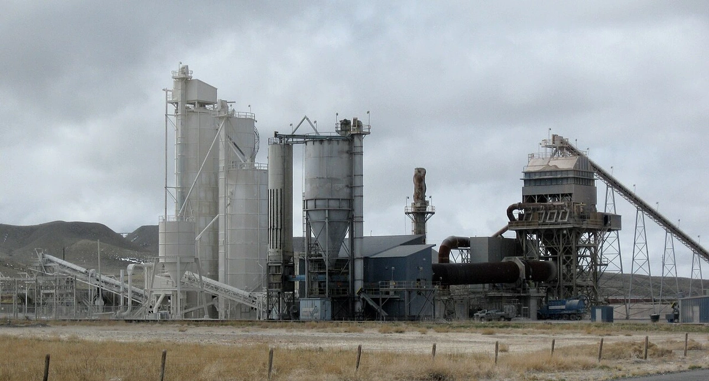
चित्र 6.15: सीमेंट कारखाना रोटरी क्लिन (Rotary Kiln Cement Manufacturing Plant)।
🧱 राष्ट्र निर्माण का आधार:
• 1450°C ताप पर चूना पत्थर व जिप्सम का प्रगलन कर उच्च कोटि का क्लिंकर व पोर्टलैंड सीमेंट तैयार करना।
🚀 उदारीकरण का चमत्कार: 1991 के आर्थिक उदारीकरण के बाद प्रत्यक्ष विदेशी निवेश (FDI) और नई तकनीकों के आगमन से ऑटोमोबाइल उद्योग में तीव्र उछाल आया। भारत में कारें, बहु-उपयोगी वाहन (SUV), वाणिज्यिक ट्रक, बसें, दोपहिया (स्कूटर/बाइक) व ट्रैक्टर विश्व स्तरीय गुणवत्ता के बनते हैं।
🗺️ प्रमुख केंद्र: दिल्ली-गुरुग्राम-मानेसर, मुंबई-पुणे, चेन्नई, कोलकाता, जमशेदपुर, बेंगलुरु, हैदराबाद व लखनऊ।
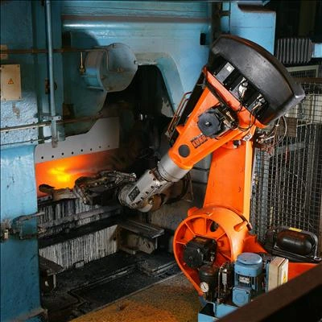
चित्र 6.16: रोबोटिक कार असेंबली लाइन (Robotic Automotive Assembly Line)।
🚗 उच्च परिशुद्धता विनिर्माण:
• पुणे व गुरुग्राम के संयंत्रों में स्वचालित रोबोटिक आर्म्स द्वारा आधुनिक यात्री कारों की वेल्डिंग व असेंबली।
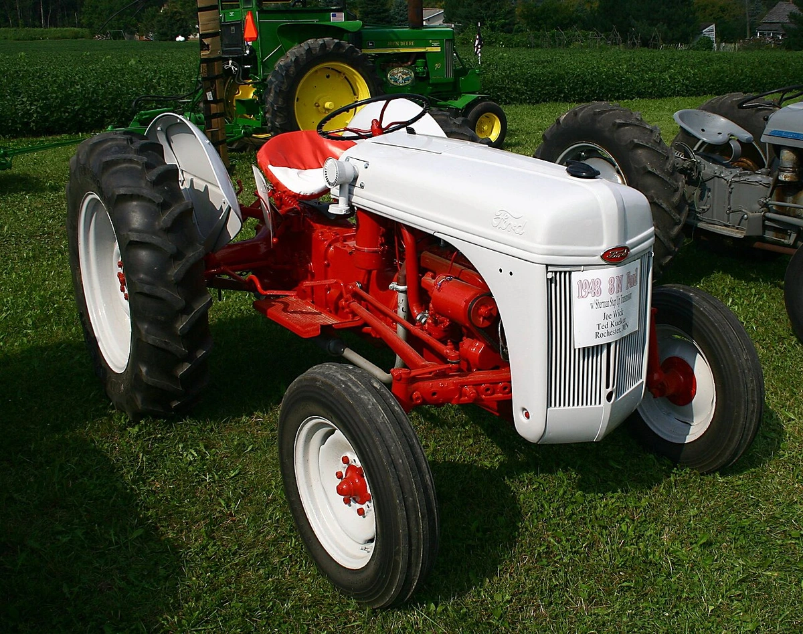
चित्र 6.17: भारी वाहन व ट्रैक्टर विनिर्माण (Commercial Trucks & Tractors Manufacturing)।
🚜 कृषि व माल ढुलाई का आधार:
• भारत विश्व में ट्रैक्टरों का सबसे बड़ा उत्पादक तथा वाणिज्यिक ट्रकों का अग्रणी निर्यातक है।
📱 इलेक्ट्रॉनिक्स उत्पाद: ट्रांजिस्टर, टेलीविजन, टेलीफोन, सेल्यूलर टेलीकॉम, पेजर, कंप्यूटर, रडार, अंतरिक्ष व रक्षा उपकरण।
🌆 भारत की सिलिकॉन वैली: बेंगलुरु (Bengaluru) को भारत की 'इलेक्ट्रॉनिक राजधानी' (Silicon Valley of India) कहा जाता है। अन्य प्रमुख IT केंद्र: नोएडा, मुंबई, पुणे, हैदराबाद, चेन्नई, गुरुग्राम व कोलकाता।
👩💼 रोजगार व महिला सशक्तिकरण: IT एवं बिजनेस प्रोसेस आउटसोर्सिंग (BPO) उद्योग में कार्यरत कर्मचारियों में लगभग 30% से अधिक महिलाएं हैं। यह क्षेत्र निरंतर विदेशी मुद्रा अर्जित कर रहा है।
चित्र 6.18: बेंगलुरु इलेक्ट्रॉनिक सिटी IT हब (Bengaluru Silicon Valley Tech Park)।
💻 भारत की इलेक्ट्रॉनिक राजधानी:
• वैश्विक सॉफ्टवेयर, AI एवं IT सेवाओं का नेतृत्व करने वाला भारत का सबसे बड़ा तकनीकी केंद्र।
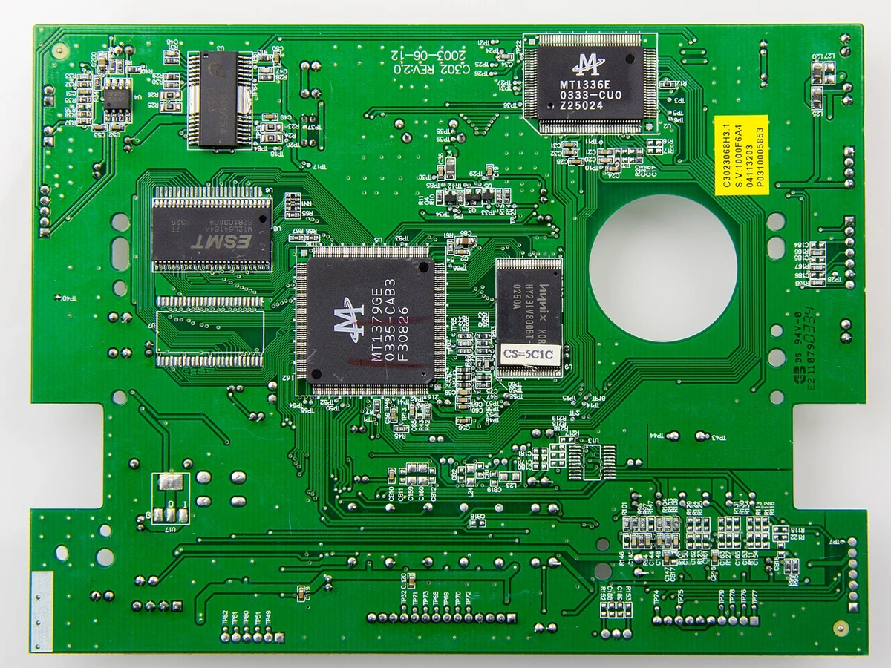
चित्र 6.19: सेमीकंडक्टर PCB असेंबली (Cleanroom Semiconductor PCB Line)।
📱 सूक्ष्म इलेक्ट्रॉनिक्स विनिर्माण:
• स्मार्टफोन्स, कंप्यूटर्स व ऑटोमोबाइल कंट्रोल यूनिट्स हेतु उच्च परिशुद्धता मदरबोर्ड असेंबली।
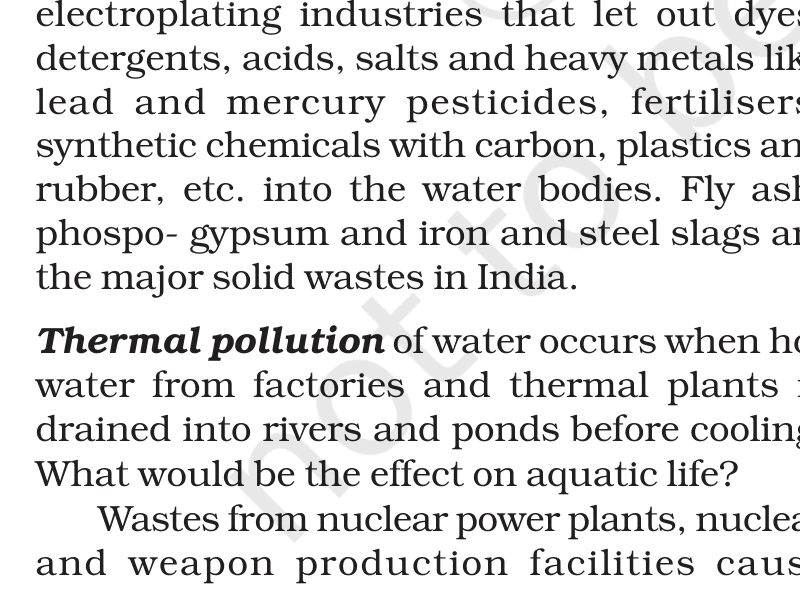
चित्र 6.20: टेलीकॉम केबल विनिर्माण (Telephone Cables Manufacturing Facility)।
📞 दूरसंचार बुनियादी ढांचा:
• देशव्यापी डिजिटल संचार एवं ब्रॉडबैंड नेटवर्क हेतु तांबा व फाइबर केबलों का विनिर्माण।
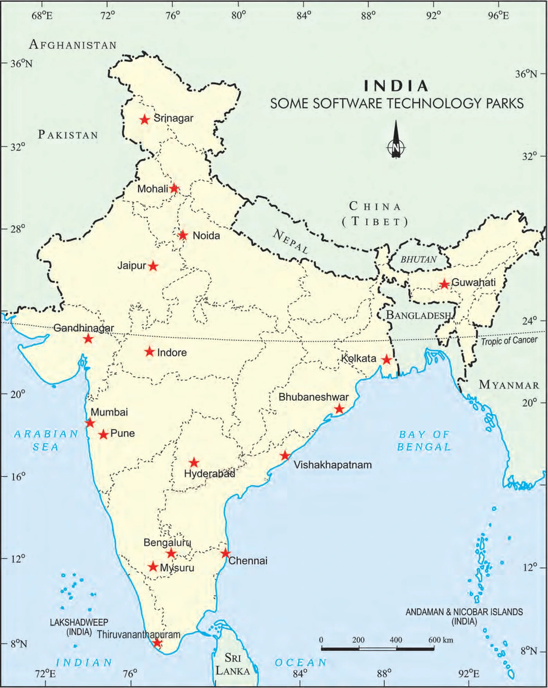
चित्र 6.21: भारत के प्रमुख सॉफ्टवेयर टेक्नोलॉजी पार्क्स (STPI Software Tech Parks of India)।
🗺️ STPI केंद्र:
• श्रीनगर, मोहाली, नोएडा, जयपुर, गांधीनगर, इंदौर, मुंबई, पुणे, कोलकाता, भुवनेश्वर, विशाखापट्टनम, हैदराबाद, बेंगलुरु, मैसूर, चेन्नई, तिरुवनंतपुरम।
उद्योगों ने भारत के आर्थिक विकास में अत्यधिक योगदान दिया है, लेकिन इनके द्वारा उत्पन्न प्रदूषण ने पर्यावरण का भारी क्षरण किया है। उद्योग 4 प्रकार का प्रदूषण फैलाते हैं:
- वायु प्रदूषण (Air Pollution): कारखानों से निकलने वाली हानिकारक गैसें (सल्फर डाइऑक्साइड, कार्बन मोनोऑक्साइड) तथा धूल, धुआं व एरोसोल स्प्रे। मानव स्वास्थ्य, पशुओं, पौधों व इमारतों को भारी नुकसान।
- जल प्रदूषण (Water Pollution): चमड़ा, कागज, कपड़ा व रासायनिक उद्योगों द्वारा बिना शोधन के विषैले कार्बनिक व अकार्बनिक अपशिष्ट (डिटर्जेंट, भारी धातुएं - सीसा, पारा, कीटनाशक) नदियों में बहाना।
- तापीय प्रदूषण (Thermal Pollution): कारखानों व ताप विद्युत गृहों से गर्म जल को बिना ठंडा किए सीधे नदियों/तालाबों में छोड़ना, जिससे जलीय जीवन नष्ट हो जाता है।
- ध्वनि प्रदूषण (Noise Pollution): औद्योगिक मशीनरी, जनरेटर, विद्युत आरी व कंप्रेशर्स से अत्यधिक शोर, जिससे बहरापन, रक्तचाप व मानसिक तनाव बढ़ता है।
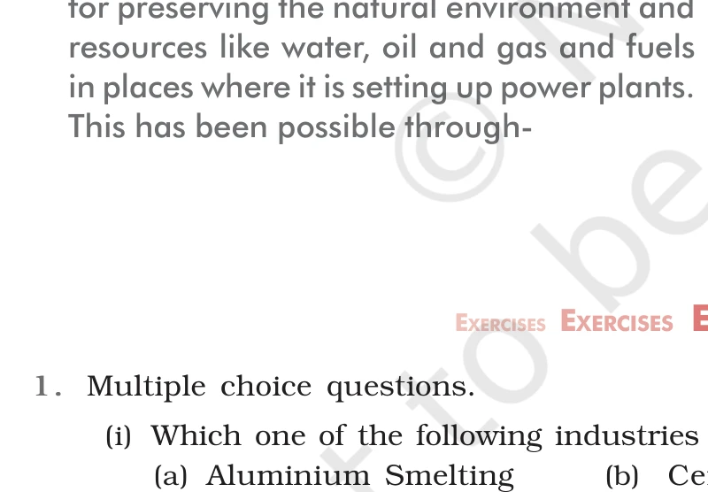
चित्र 6.22: औद्योगिक वायु प्रदूषण (Industrial Smoke & Air Pollution Emissions)।
⚠️ वायुमंडलीय क्षरण:
• जीवाश्म ईंधनों के दहन से निकलने वाली सल्फर व कार्बन गैसें जो अम्लीय वर्षा और श्वसन रोगों का कारण बनती हैं।
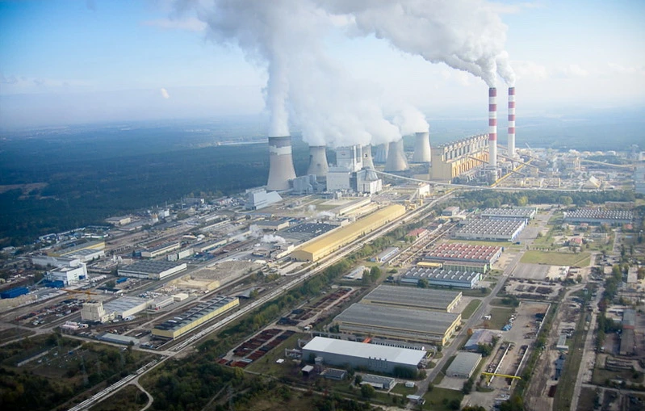
चित्र 6.23: उत्सर्जन नियंत्रण चिमनियां (Industrial Stacks with ESP Dust Collectors)।
🛡️ धुआं नियंत्रण तकनीक:
• इलेक्ट्रोस्टैटिक प्रेसिपिटेटर (ESP), फैब्रिक फिल्टर व स्क्रबर्स द्वारा धुएं से 99% ठोस कण अलग करना।
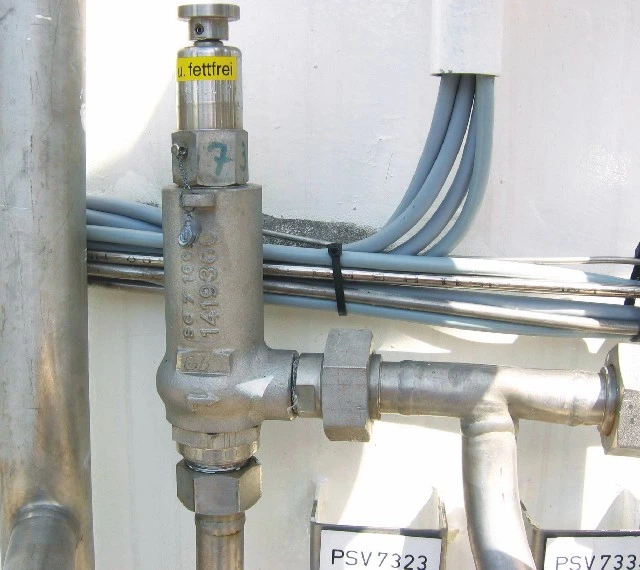
चित्र 6.24: औद्योगिक सुरक्षा वॉल्व एवं पाइपिंग (High-Pressure Industrial Safety Valves)।
⚠️ रासायनिक आपदा रोकथाम:
• भोपाल गैस त्रासदी जैसी घटनाओं से बचने हेतु स्वचालित रिसाव रोधक व प्रेशर-रिलीफ सुरक्षा प्रणालियां।
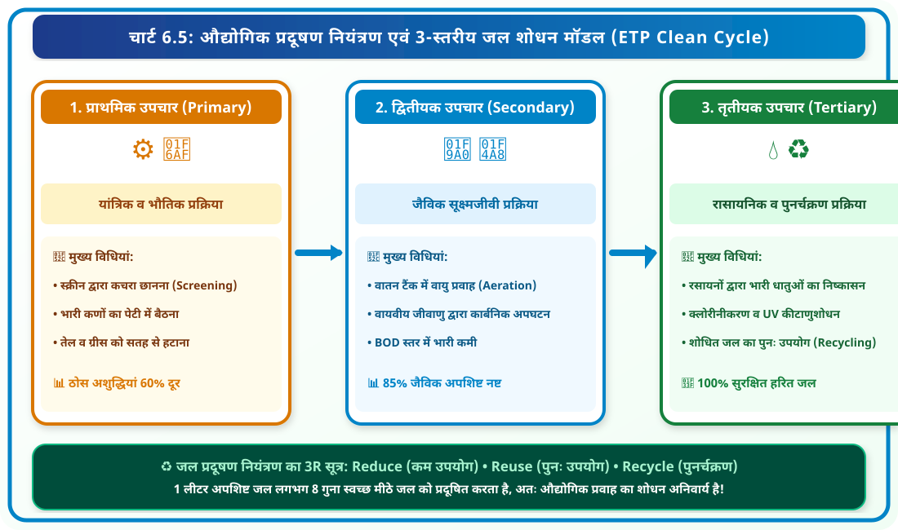
चार्ट 6.5: औद्योगिक प्रदूषण नियंत्रण एवं 3-स्तरीय जल शोधन मॉडल (ETP Clean Cycle)।
💧 3-स्तरीय जल शोधन (Effluent Treatment):
• प्राथमिक (यांत्रिक): छानना, तलछटीकरण व तेल निष्कासन (60% ठोस अशुद्धियां दूर)।
• द्वितीयक (जैविक): वातन टैंकों में वायवीय जीवाणुओं द्वारा जैविक अपघटन (85% BOD कमी)।
• तृतीयक (रासायनिक): रसायनों, UV व पुनर्चक्रण द्वारा 100% सुरक्षित जल का पुनः उपयोग।
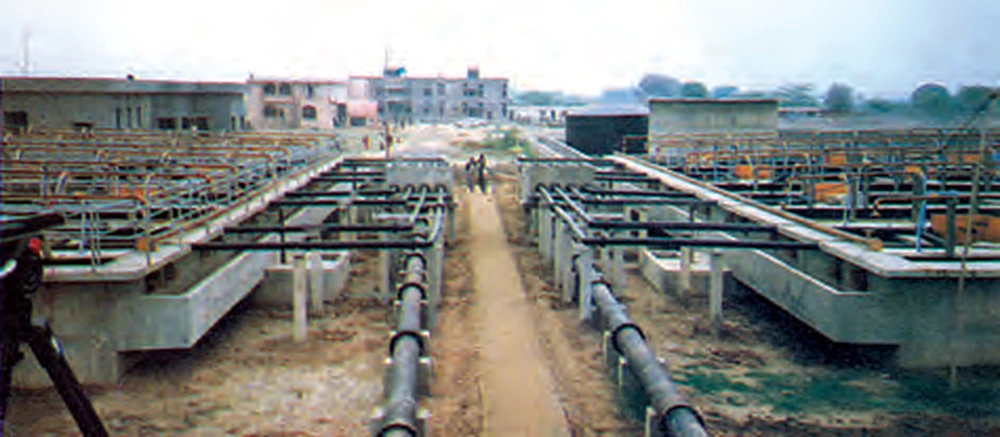
चित्र 6.25: अपशिष्ट जल शोधन संयंत्र (Sewage & Effluent Treatment Plant)।
💧 जलीय पारिस्थितिकी संरक्षण:
• नदियों में छोड़ने से पूर्व औद्योगिक प्रवाह का भौतिक व रासायनिक निष्कासन संयंत्र।
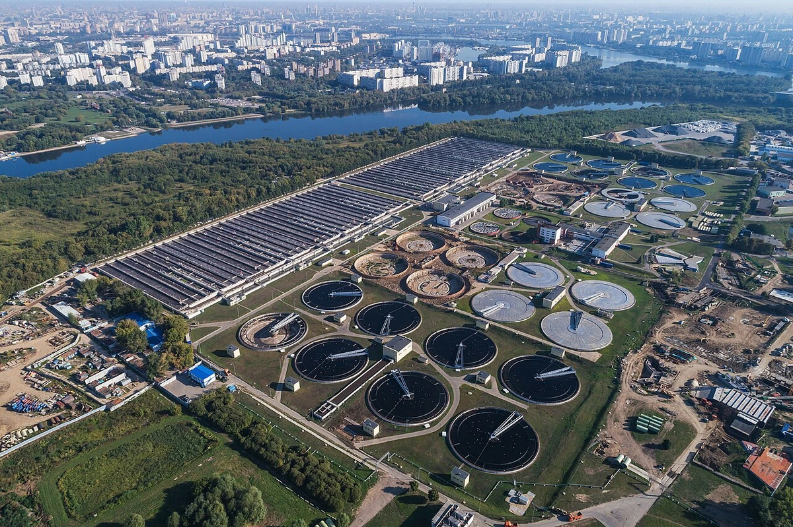
चित्र 6.26: आधुनिक ETP वातन शोधन टैंक (Industrial Wastewater Aeration Tank)।
♻️ शून्य तरल निर्वहन (Zero Liquid Discharge):
• सूक्ष्मजीवों द्वारा विषैले रसायनों का अपघटन कर 100% जल का कारखानों व बागवानी में पुनर्चक्रण।
1. आधुनिकतम तकनीकों का उपयोग: ईंधन दक्षता बढ़ाकर नवीनतम उपकरणों का संचालन ताकि प्रदूषण न्यूनतम हो।
2. राख का अधिकतम उपयोग (Ash Utilization): ताप संयंत्रों से निकलने वाली फ्लाई-ऐश का 100% उपयोग ईंटों व सीमेंट निर्माण में करना।
3. हरित पट्टी विकास (Green Belt Afforestation): पारिस्थितिकी संतुलन बनाए रखने हेतु विद्युत गृहों के चारों ओर सघन वनों का विकास।
4. राख कुंड प्रबंधन एवं जल पुनर्चक्रण: लिक्विड वेस्ट मैनेजमेंट तथा बंद-चक्र राख जल पुनर्चक्रण (Ash Water Recycling)।
5. पारिस्थितिकी निगरानी: सभी ऊर्जा संयंत्रों के लिए रीयल-टाइम ऑनलाइन डेटा प्रबंधन व पर्यावरण ऑडिट।
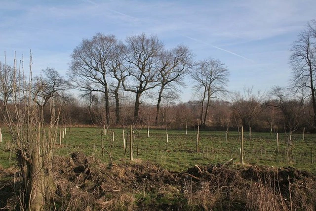
चित्र 6.27: NTPC हरित पट्टी एवं इको-पार्क (Green Belt Afforestation & Eco-Restoration)।
🌿 सतत औद्योगिक विकास:
• थर्मल पावर कॉम्प्लेक्स के चारों ओर सघन वृक्षारोपण द्वारा कार्बन सोखना एवं जैव विविधता संरक्षण।
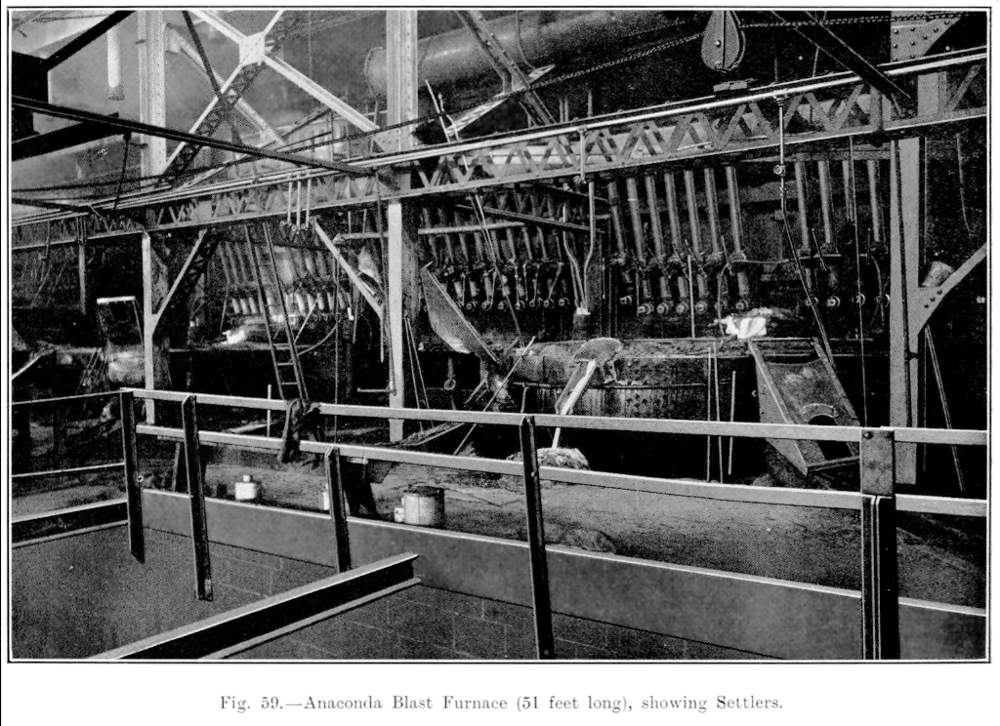
चित्र 6.28: अलौह धातु प्रगलन संयंत्र (Copper & Zinc Metallurgical Smelter)।
⚙️ सामरिक धातु विनिर्माण:
• राजस्थान (चंदेरिया/खेतड़ी) में स्थापित आधुनिक उत्सर्जन-नियंत्रित तांबा व जस्ता प्रगलन भट्टियां।
📌 परीक्षा उपयोगी त्वरित सारांश बिंदु (Quick Exam Takeaways):
1. विनिर्माण: द्वितीयक क्षेत्र; GDP में 17% अंश; NMCC द्वारा 12% वृद्धि दर का लक्ष्य।
2. प्रथम सूती मिल: 1854 मुंबई | प्रथम जूट मिल: 1855 रिशरा (कोलकाता) | प्रथम सीमेंट: 1904 चेन्नई।
3. वस्त्र उद्योग: भारत का एकमात्र आत्मनिर्भर व परिपूर्ण उद्योग। सूत का बड़ा निर्यातक (जापान)।
4. हुगली नदी बेसिन: सस्ता जल, कच्चा जूट, सस्ता श्रम व कोलकाता पत्तन के कारण जूट मिलों का संकेंद्रण।
5. चीनी उद्योग: मौसमी; सहकारी क्षेत्र के लिए आदर्श; उच्च सुक्रोज व लंबे पेराई सत्र हेतु महाराष्ट्र की ओर स्थानांतरण।
6. इस्पात अनुपात: 4 लौह अयस्क : 2 कोकिंग कोयला : 1 चूना पत्थर। छोटानागपुर पठार मुख्य केंद्र।
7. उर्वरक: पोटाश का 100% आयात। यूरिया मुख्य उत्पाद।
8. सिलिकॉन वैली: बेंगलुरु (इलेक्ट्रॉनिक राजधानी)। 30%+ महिला रोजगार।
9. जल प्रदूषण नियंत्रण: 3R सूत्र (Reduce, Reuse, Recycle); 3-स्तरीय ETP शोधन (प्राथमिक, द्वितीयक, तृतीयक)।